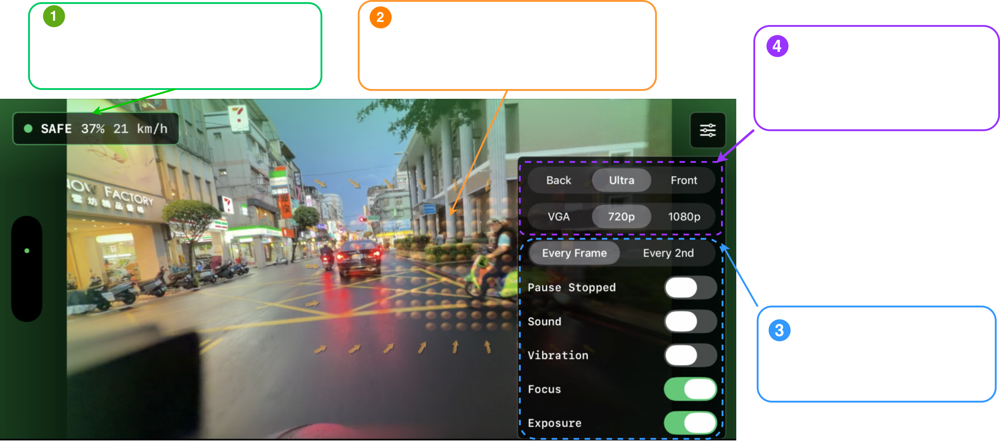

Real-time causal traffic hazard anticipation on edge devices.
RWKV video model · CoreML / TensorRT · iPhone + Jetson Orin Nano

HERMES was integrated into a real-time iOS prototype for motorcycle-mounted traffic hazard anticipation. The app processes a live camera stream directly on device and visualizes predicted traffic risk through a compact safety dashboard.
Tested in real-world urban riding scenarios including rainy roads, nighttime traffic, dense scooter flows, intersections, and mixed vehicle environments in Taipei City.
HERMES running in real time on iPhone during motorcycle-mounted riding in urban traffic in Taipei City.
HERMES uses a Hierarchical Spatio-Temporal RWKV backbone for efficient causal video understanding.
| Platform | Runtime | Status |
|---|---|---|
| iPhone | CoreML | Real-time prototype implemented |
| NVIDIA Jetson Orin Nano | CUDA / TensorRT | Edge deployment tested |